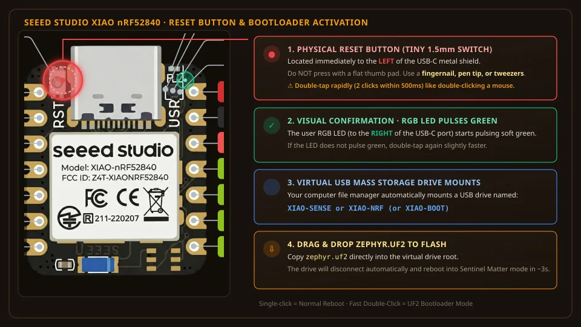

Stage 3 — Sensor Bench Build (PS-1 & DS-1)
Bench-assembling, flashing, pairing, and calibrating both battery-powered Matter-over-Thread sensors. Because Stages 1 & 2 established the server and Thread network first, these sensors pair immediately on the bench without external vendor clouds.
Build and verify two sensors on the bench: (1) PS-1 Presence Sensor (Seeed Studio XIAO nRF52840 + LD2410C mmWave radar + TPS62840 LDO power gate) running Sentinel Matter firmware, and (2) DS-1 Door Contact Sensor (Seeed Studio XIAO ESP32-C6 + MC-38 reed switch). Pair both into Home Assistant via native Matter QR-code scan over the local Thread mesh.
1. Flash Sentinel Zephyr Firmware on XIAO nRF52840
The Seeed Studio XIAO nRF52840 ships with a factory UF2 USB mass storage bootloader — no JTAG/SWD programmer is required:
- Download the precompiled Sentinel firmware UF2 binary from the Sentinel GitHub Repository →.
- Connect the XIAO nRF52840 to your computer via a standard USB-C cable.
- Double-tap the tiny physical Reset button on the board. A virtual USB drive named
XIAO-SENSEorXIAO-NRFwill appear in your file manager. - Drag and drop
zephyr.uf2directly onto the virtual USB drive. The board will automatically flash the firmware and reboot.

- What It Looks Like: The board does not have a traditional plastic rocker or plunger button. To fit inside the ultra-compact 21×17.5mm form factor, Seeed uses a micro metal-dome tactile switch that resembles a tiny silver solder bead or metallic blister (~1.5mm) directly beside the USB-C shield.
- Use a Pointed Tool: Pressing with a flat thumb pad often fails to actuate the micro switch. Use a fingernail, toothpick, tweezers, or the blunt tip of a ballpoint pen. You will feel a subtle, crisp mechanical click.
- Double-Click Timing (<500ms): Tap the button twice quickly, exactly like double-clicking a computer mouse. A single click only executes a standard MCU reboot; a rapid double-tap triggers bootloader mode.
- Visual Confirmation: When bootloader mode activates, the onboard RGB LED (located to the right of the USB-C port) begins pulsing a gentle green light.
- Virtual Drive Appears: A virtual mass-storage drive titled
XIAO-SENSE,XIAO-NRF, orXIAO-BOOTwill immediately mount on your operating system (macOS Finder, Windows Explorer, or Linux File Manager).
2. Direct Bench Interconnect & Verification (No Breakout Board Needed)
You do not need the custom Sentinel PCB to bench-test the presence sensor. While the custom PCB is required for permanent wall-mounting inside the 3D ball enclosure and multi-month battery power-gating, all sensing, UART communication, and Matter-over-Thread pairing can be 100% verified right now on a solderless breadboard (INV-03) or using 4 DuPont jumper wires (INV-06).
The Seeed Studio XIAO nRF52840 already integrates a Texas Instruments BQ25100 LiPo battery charger IC directly on the module. When you plug a standard USB-C cable into the XIAO, it automatically powers the MCU, outputs 3.3V to the radar, and charges any attached LiPo battery. Do not connect an external TP4056 charging board in parallel with the XIAO battery pins, as competing charge controllers will cause power conflicts and overcharging risks.
If your radar module has the factory silkscreen JVJ, GND, OT1, RX, OT2, here is the exact hardware mapping:
JVJis3V3: In Hi-Link's factory PCB font, the numeral3is rendered with hooked top and bottom strokes, making3V3appear visually asJVJ. This is the +3.3V DC power input (3.0V–3.6V, draws ~0.6mA during active radar scans). Never connect 5V to this pin.GNDis Ground: System 0V return reference.OT1is UART_TX (Radar Output 1): Serial data transmit from the radar at 115,200 baud. It streams real-time target distance and energy curves. Connects to the microcontroller's RX pin (XIAO Pin 8 / D7).RXis UART_RX (Radar Input): Serial data receive to the radar at 115,200 baud. It receives sensitivity thresholds and gate parameters. Connects from the microcontroller's TX pin (XIAO Pin 7 / D6).OT2is OUT (Radar Output 2 / Interrupt): Hardware presence trigger pin. Driven HIGH (3.3V) within <50ms when a target enters the radar gates, and returns LOW when vacant. Connects to XIAO Pin 4 (D3 / IRQ).
Bench Pinout & Jumper Connection Table
| Signal Function | Seeed Studio XIAO nRF52840 | Wire Colour | Hi-Link Radar Silkscreen & Pin | Electrical Role & Operation |
|---|---|---|---|---|
| 3.3V DC Power | Pin 12 (3V3 Out) | Red | Pin 1: JVJ (3V3) | Supplies clean 3.3V from the XIAO onboard regulator. (Silkscreen "JVJ" is stylized font for 3V3). Draws ~0.6mA during active radar scans. |
| System Ground | Pin 13 (GND) | Black | Pin 2: GND | Common 0V digital and RF return path. |
| UART Data In (RX ← TX) | Pin 8 (D7 / RX) | Green | Pin 3: OT1 (TX) | Real-time radar output stream at 115,200 baud (Out 1). Streams target distance, moving & static energy to microcontroller. |
| UART Data Out (TX → RX) | Pin 7 (D6 / TX) | Blue | Pin 4: RX | Serial command input to radar at 115,200 baud. Sends sensitivity and gate thresholds from microcontroller. |
| Presence Interrupt (Optional) | Pin 4 (D3 / IRQ) | Yellow (Dashed) | Pin 5: OT2 (OUT) | Hardware interrupt line (Out 2) driven HIGH (<50ms) upon human motion. Optional on bench. |
Two Ways to Verify on the Bench
The HLK-LD2410S has an onboard Bluetooth LE transceiver. You can verify physical radar detection before flashing any firmware:
- Connect only 3.3V (Red) and GND (Black) from the powered XIAO board to the radar.
- Install the free HLKRadarTool app on your smartphone (Android / iOS) or open
radar.esphome.ioin Chrome. - Connect over Bluetooth (default password:
HiLink). - Observe real-time radar curves: moving energy, stationary (breathing) energy, and detected target distance in centimeters across Gates 0–8. Wave your hand or sit still to confirm detection.
With all 4 DuPont wires connected, plug the XIAO into your computer via USB-C. Follow Step 1 above to flash zephyr.uf2, and commission the sensor directly into Home Assistant over Thread — proving the entire stack on your desk before soldering.
3. Assemble and Solder the Sentinel Reference PCB
If assembling on the Sentinel custom PCB (CERN-OHL-S-2.0) for permanent wall-mounting inside the 3D ball enclosure, follow the milled-window soldering sequence:
- Solder Surface Edge Castellations: Align the Seeed Studio XIAO nRF52840 squarely over footprint pads 1–14 on the top side of the PCB. Tack down opposite corners (Pin 1 and Pin 14) with flux and lead-free solder, then solder the remaining castellated edge pads.
- Flip Board & Inspect Windows: Turn the PCB over. You will see circular through-milled cutouts directly exposing the gold bottom-side pads of the XIAO: pads 15 (
BAT+), 16 (GND), and 19–22 (SWD debug). - Bridge Solder into Windows: Apply a small drop of gel flux into windows 15 and 16. Touch your iron tip to the inside wall of the plated hole and feed solder until a solid solder dome connects the PCB copper ring to the underside XIAO pad. This connects the 2,000 mAh battery directly to the onboard TI BQ25100 LiPo charger IC.
- Solder LDO & Passives: Solder U2 (ST LDLN030G33R, TSOT-23-5 package) and passives C1–C4 and R1 (0603 or 0805 packages).
- Mount Radar Header & JST: Solder the 5-pin female header on the left side and the 2-pin JST-PH battery connector.
4. Permanent Enclosure & LDO Power Gating Hookup
When completing the permanent custom PCB build, verify the low-noise power-gated interconnect matrix as specified in the PS-1 Hardware Pinout:
| XIAO nRF52840 Pin | Signal Role | Target Device & Pin | Note |
|---|---|---|---|
| Pin D6 (TX) | UART Transmit | LD2410S Pin 4 (RX) | Configuration & threshold commands (MCU TX → Radar RX) |
| Pin D7 (RX) | UART Receive | LD2410S Pin 3 (OT1 / TX) | Real-time target distance & energy data (Radar OT1 → MCU RX) |
| Pin D3 | Interrupt Input | LD2410S Pin 5 (OT2 / OUT) | Fast waking on initial motion (~50 ms) |
| Pin D2 | LDO Enable Gate | ST LDLN030G33R Pin EN | Powers off radar completely during sleep |
| 3.3V Out (LDO) | Regulated Radar Power | LD2410S Pin 1 (JVJ / 3V3) | Clean 3.3V power (<7.5µV ripple, bypasses battery sag) |
| GND | Common Ground | LD2410S Pin 2 (GND) & LDLN030 GND | Common 0V reference |
| BAT+ / BAT- | LiPo Power Rail | LiPo Battery Cell (Stage 3 BOM) | 3.7V nominal chemistry |
5. Matter-over-Thread Commissioning into Home Assistant
- Power the assembled PS-1 sensor via its LiPo cell. The onboard status LED will blink slowly, indicating Matter commissioning mode.
- Open the Home Assistant Companion App on your mobile device (must be on the same local Wi-Fi subnet as the Radxa server).
- Navigate to Settings → Devices & Services → Add Device → Add Matter Device.
- Scan the printed Matter QR-code (or enter the 11-digit setup code from your firmware build).
- Home Assistant securely shares the Thread operational credentials from Stage 2 to the sensor over Bluetooth LE.
- Within 15–30 seconds, the sensor joins the Thread mesh, and two new entities appear:
binary_sensor.study_occupancyandsensor.study_target_distance.
6. Run 2-Minute Auto-Threshold Noise Mapping
To eliminate phantom false triggers from room reflections:
- Place the assembled bench sensor at its intended operating height (1.8m) pointing into the empty room.
- Ensure no people or moving pets are in the room.
- In Home Assistant, trigger the entity
button.study_run_noise_calibration(or use the HLKRadarTool app via Bluetooth). - The sensor enters a 120-second learning cycle, recording ambient baseline RF noise across all 8 distance gates (0.75m to 6.0m) and setting stationary energy thresholds +20% above background noise.
7. Enclosure Fit & Housing Assembly
Snap the electronics into the 3D-printed enclosure (Sentinel 3D Models):
- Slide the LD2410S radar into the front cavity with its antenna face pointing outward through the thin front wall.
- Seat the XIAO nRF52840 into the tray with its USB-C port aligned with the service cutout.
- Tuck the LiPo cell into the rear cavity behind the insulation barrier.
- Snap the ball-and-socket baseplate onto the back.
8. Door Contact Sensor (DS-1) Assembly & Pairing
As documented in the DS-1 Component Guide, assemble the bathroom door sensor:
- Solder the MC-38 magnetic reed switch wires to GPIO 2 and GND on the XIAO ESP32-C6.
- Connect the 2,000 mAh LiPo battery to the underside battery pads.
- Flash the ESP-Matter contact sensor firmware via USB-C.
- Scan the Matter QR-code in Home Assistant to commission the door sensor into the local Thread mesh.
- Bring the magnet within 15 mm of the reed switch. Confirm that
binary_sensor.bathroom_doorupdates betweenOpenandClosedwith sub-80ms latency. closes O-12
Both the PS-1 presence sensor and DS-1 door sensor commission cleanly over the local Thread mesh into Home Assistant, report state changes within 100 ms, monitor battery levels, and operate seamlessly when the internet cable is unplugged.